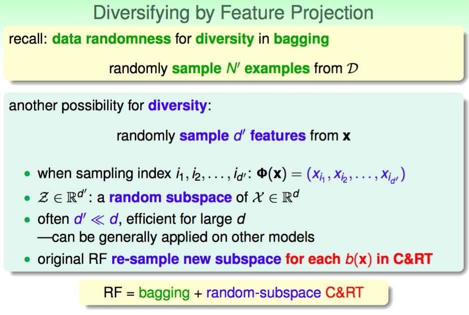
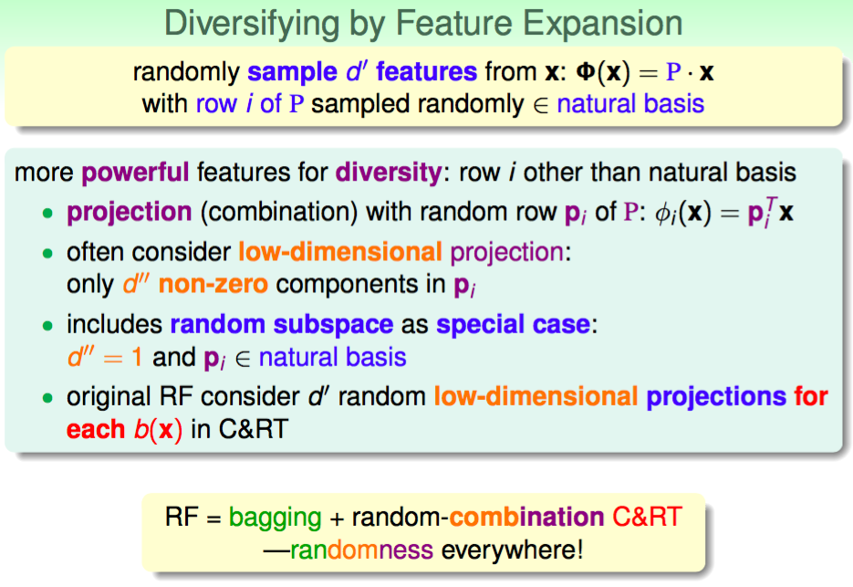
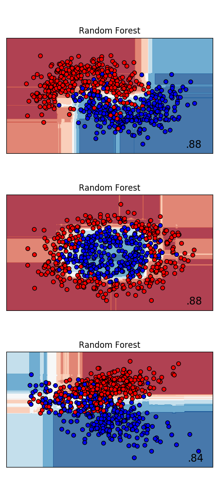

随机森林
集成学习
1. Boosting
提升方法（Boosting），是一种可以用来减小监督式学习中偏差的机器学习元算法。一个经典的提升算法例子是AdaBoost。一些最近的例子包括LPBoost、TotalBoost、BrownBoost、MadaBoost及LogitBoost。许多提升方法可以在AnyBoost框架下解释为在函数空间利用一个凸的误差函数作梯度下降。
Adaboost是一种迭代算法，其核心思想是针对同一个训练集训练不同的分类器（弱分类器），然后把这些弱分类器集合起来，构成一个更强的最终分类器（强分类器）。Adaboost算法本身是通过改变数据分布来实现的，它根据每次训练集之中每个样本的分类是否正确，以及上次的总体分类的准确率，来确定每个样本的权值。将修改过权值的新数据集送给下层分类器进行训练，最后将每次得到的分类器最后融合起来，作为最后的决策分类器。
2. Bagging
Bagging算法 （英语：Bootstrap aggregating，引导聚集算法），又称装袋算法，是机器学习领域的一种团体学习算法。最初由Leo Breiman于1994年提出。Bagging算法可与其他分类、回归算法结合，提高其准确率、稳定性的同时，通过降低结果的方差，避免过拟合的发生。
给定一个大小为$n$的训练集$D$，Bagging算法从中均匀、有放回地（即使用自助抽样法）选出$m$个大小为$n^{‘}$的子集$D_{i}$，作为新的训练集。在这$m$个训练集上使用分类、回归等算法，则可得到$m$个模型，再通过取平均值、取多数票等方法，即可得到Bagging的结果。
3. Random Forest
随机森林算法不同于Boosting和Bagging算法，但是随机森林算法和Bagging算法比较相似。随机森林使用了Bagging算法中的随机选择训练集的子集，但是随机森林还随机选取特征空间。因此，随机森林算法降低了偏差，但是能够进一步降低方差。
随机森林的数学原理
作为衡量一个分类器性能好坏的重要指标，泛化能力指的是一个分类器正确分类训练集以外的样本的能力。泛化误差指的是分类器对训练集之外的样本的判别错误的比例。通过定义随机森林分类间隔函数(margin function)利用大数定律作为理论基础证明得到以下的结论：随着随机森林中决策树的数目的增加，随机森林的泛化误差会趋向于一个有限上界。
随机森林的收敛性
设样本集为$T \lbrace X, Y \rbrace$，$X$为样本的特征属性，$Y$为其对应的类别属性。对于一组给定的分类器集合$\lbrace h_1(x), h_2(x), ……, h_i(x) \rbrace$，样本点$(x, y)$的间隔函数(margin function)的定义为：
$$mg(x, y) = av_{k} I(h_{k}(x) = y) - \max_{j \neq y} av_{k} I(h_{k}(x) = j) \tag{1}$$
其中，$I(\bullet)$为指示函数，$av_{k}(\bullet)$是取平均值。$mg(x, y)$衡量了分类器集合将样本分类正确的平均票数与将其错分为其他类的平均票数之差。$mg(x, y) > 0$表明这个样本被该组合分类器正确分类，否则表示被错误分类。$mg(x, y)$的数值越大，表明分类器集合对这个样本的分类性能越好，置信度越高。
分类器的泛化误差可表示为：
$$PE^{\ast} = P_{X, Y}(mg(x, y) < 0) \tag{2}$$
在随机森林中，$h_{k}(x) = h(x, \theta_k)$，当森林中树比较多时，$(2)$式遵循强大数定律。
定理 1：随着森林中树的数目的增加，在所有序列$\theta_i$上，$PE^{\ast}$几乎处处收敛于：
$$P_{X,Y}(P_{\theta}(h(X, \theta) = Y) - \max_{j \neq Y} P_{\theta}(h(X, \theta) = j) < 0) \tag{3}$$
其中，$\theta$是对应单棵决策树的随机向量，$h(X, \theta)$为基于$X$和$\theta$的分类器的输出。该定理阐述了随机森林在随着树的数目增加时得到一个有限的泛化误差值而不会过拟合的原因。
分类效能和相关度
随机森林的泛化误差主要取决于以下两个因素：
- 随机森林中单棵树的分类强度(strength)。单棵树的分类强度越大，则随机森林的泛化能力越好。
- 随机森林中树与树之间的关联程度(correlation)。树与树之间的关联度越小，则随机森林的泛化能力越好。
定义 1：随机森林对于样本$(x, y)$的间隔函数为：
$$mr(x, y) = P_{\theta} (h(x, \theta) = y) - \max_{j \neq y} P_{\theta} (h(x, \theta) = j) \tag{4}$$
分类器集合$\lbrace h(x, \theta) \rbrace$的分类效能为：
$$s = E_{X, Y} mr(x, y) \tag{5}$$
假设$s \ge 0$，由切比雪夫不等式可知：
$$PE^{\ast} \le \frac{var(mr)}{s^2} \tag{6}$$
其中，$var(mr)$是随机森林的间隔函数$mr(x, y)$的方差。
设$\hat{j} (x, y) = \arg \max_{j \ne y} P_{\theta} (h(x, \theta) = j)$，此时有：
$$\begin{equation} mr(x, y) = P_{\theta} (h(x, \theta) = y) - P_{\theta} (h(x, \theta) = \hat{j} (x, y)) \\ = E_{\theta}[(I(h(x, \theta)) = y) - I_{\theta} (h(x, \theta) = \hat{j} (x, y))] \end{equation}\tag{7}$$
定义 2：元分类器的间隔函数为：
$$rmg(\theta, x, y) = I(h(x, \theta) = y) - I_{\theta} (h(x, \theta) = \hat{j} (x, y)) \tag{8}$$
所以，$mr(x, y)$是$rmg(\theta, x, y)$在$\theta$上的期望值。对于任意的函数$f$，有恒等式如下：$[E_{\theta}f(\theta)]^2 = E_{\theta, \theta^{‘}} rmg(\theta, x, y)rmg(\theta)$。
由上面的式子可以得到$var(mr)$的表达式如下说示：
$$var(mr) = E_{\theta, \theta^{‘}} (cov_{X, Y}(rmg(\theta, x, y), rmg(\theta, x, y))) \\ = E_{\theta, \theta^{‘}} (\rho(\theta, \theta^{‘}) sd(\theta) sd(\theta^{‘})) \tag{9}$$
其中，$\rho(\theta, \theta^{‘})$是当$\theta, \theta^{‘}$固定时，$rmg(\theta, x, y)$和$rmg(\theta^{‘}, x, y)$的相关度；$sd(\theta)$是当$\theta$固定时，$rmg(\theta, x, y)$的标准差。因此有：$var(mr) = \bar{\rho} (E_{\theta} sd(\theta))^2 \le \bar{\rho} (E_{\theta} var(\theta))$，其中，$\bar{\rho}$是相关度$\rho$的平均值。
$$\bar{\rho} = E_{\theta, \theta^{‘}} (\rho(\theta, \theta^{‘})sd(\theta)sd(\theta^{‘})) / E_{\theta, \theta^{‘}} (sd(\theta)sd(\theta^{‘})) \tag{10}$$
$E_{\theta}var(\theta)$满足以下不等式：
$$E_{\theta}var(\theta) \le E_{\theta} (E_{X,Y} rmg(\theta, x, y))^2 - s^2 \le 1 - s^2 \tag{11}$$
综上所述，可以得到方差$var(mr)$的上界为：$var(mr) \le \bar{\rho} (1-s^2)$，因此可以推出：
定理 2：随机森林泛化误差为
$$PE^{\ast}\le \bar{\rho} (1-s^2) / s^2 \tag{12}$$
由上述分析可以得知，应尽量增大单棵树的分类效能（直接影响$rmg(x,y)$的值，从而增加s），并且减小分类树之间的相关度$\rho$。当森林中树的数目达到一定值时，随机森林的泛化误差会逐步收敛于一个有限值。所以，随着森林中树的数目的增多，随机森林不会产生过拟合。
随机森林算法
加入随机性: 训练集的子空间(有放回采样)
- Bagging: 不太稳定, 变化较大, g(t) 通过投票/平均, 来 reduce variance
- CART: 对不同资料相对敏感, variance large, especially fully-grown tree

加入随机性: 采样特征子空间(无放回采样)
从100维选10维, 即做了低维度的投影. P是投影矩阵, 每行row是natural basis代表平常单位的各自的方向。

加入随机性: 加入新特征(合并, 低维的投影)

Python实现随机森林
sklearn随机森林
sklearn.ensemble 模块包含两个基于 随机决策树 的平均算法： RandomForest 算法和 Extra-Trees 算法。 这两种算法都是专门为树而设计的扰动和组合技术(perturb-and-combine techniques)。 这意味着通过在分类器构造过程中引入随机性来创建一组不同的分类器。集成分类器的预测结果是单个分类器预测结果的平均值。
与其他分类器一样，森林分类器必须拟合(fitted)两个数组： 保存训练样本的数组（或稀疏或稠密的）X，大小为 [n_samples, n_features]，和 保存训练样本目标值（类标签）的数组 Y，大小为 [n_samples]:
1 | from sklearn.ensemble import RandomForestClassifier |
同 决策树 一样，随机森林算法（forests of trees）也能够通过扩展来解决多输出问题 (如果 Y 的大小是 [n_samples, n_outputs])。
在随机森林中（参见 ExtraTreesClassifier 和 ExtraTreesRegressor 类）， 集成模型中的每棵树构建时的样本都是由训练集经过有放回抽样得来的（例如，自助采样法-bootstrap sample，这里采用西瓜书中的译法）。 另外，在构建树的过程中进行结点分割时，选择的分割点不再是所有特征中最佳分割点，而是特征的一个随机子集中的最佳分割点。 由于这种随机性，森林的偏差通常会有略微的增大（相对于单个非随机树的偏差），但是由于取了平均，其方差也会减小，通常能够补偿偏差的增加，从而产生一个总体上更好的模型。
与原始文献[B2001] 不同的是，scikit-learn 的实现是取每个分类器预测概率的平均，而不是让每个分类器对类别进行投票。
下面给出一个sklearn随机森林的例子：
1 | import numpy as np |
结果是

sklearn随机森林参数调优
和GBDT的调参类似，RF需要调参的参数也包括两部分，第一部分是Bagging框架的参数，第二部分是CART决策树的参数。下面我们就对这些参数做一个介绍。
- RF框架参数
首先我们关注于RF的Bagging框架的参数。这里可以和GBDT对比来学习。在scikit-learn 梯度提升树(GBDT)调参小结中我们对GBDT的框架参数做了介绍。GBDT的框架参数比较多，重要的有最大迭代器个数，步长和子采样比例，调参起来比较费力。但是RF则比较简单，这是因为bagging框架里的各个弱学习器之间是没有依赖关系的，这减小的调参的难度。换句话说，达到同样的调参效果，RF调参时间要比GBDT少一些。
下面我来看看RF重要的Bagging框架的参数，由于RandomForestClassifier和RandomForestRegressor参数绝大部分相同，这里会将它们一起讲，不同点会指出。
n_estimators: 也就是弱学习器的最大迭代次数，或者说最大的弱学习器的个数。一般来说n_estimators太小，容易欠拟合，n_estimators太大，计算量会太大，并且n_estimators到一定的数量后，再增大n_estimators获得的模型提升会很小，所以一般选择一个适中的数值。默认是100。
oob_score :即是否采用袋外样本来评估模型的好坏。默认识False。个人推荐设置为True，因为袋外分数反应了一个模型拟合后的泛化能力。
criterion: 即CART树做划分时对特征的评价标准。分类模型和回归模型的损失函数是不一样的。分类RF对应的CART分类树默认是基尼系数gini,另一个可选择的标准是信息增益。回归RF对应的CART回归树默认是均方差mse，另一个可以选择的标准是绝对值差mae。一般来说选择默认的标准就已经很好的。
从上面可以看出， RF重要的框架参数比较少，主要需要关注的是 n_estimators，即RF最大的决策树个数。
- RF决策树参数
下面我们再来看RF的决策树参数，它要调参的参数基本和GBDT相同，如下:
RF划分时考虑的最大特征数max_features: 可以使用很多种类型的值，默认是
None,意味着划分时考虑所有的特征数；如果是log2意味着划分时最多考虑$log_2 N$个特征；如果是sqrt或者auto意味着划分时最多考虑$\sqrt{N}$个特征。如果是整数，代表考虑的特征绝对数。如果是浮点数，代表考虑特征百分比，即考虑（百分比xN）取整后的特征数。其中N为样本总特征数。一般来说，如果样本特征数不多，比如小于50，我们用默认的None就可以了，如果特征数非常多，我们可以灵活使用刚才描述的其他取值来控制划分时考虑的最大特征数，以控制决策树的生成时间。决策树最大深度max_depth：默认可以不输入，如果不输入的话，决策树在建立子树的时候不会限制子树的深度。一般来说，数据少或者特征少的时候可以不管这个值。如果模型样本量多，特征也多的情况下，推荐限制这个最大深度，具体的取值取决于数据的分布。常用的可以取值10-100之间。
内部节点再划分所需最小样本数min_samples_split：这个值限制了子树继续划分的条件，如果某节点的样本数少于min_samples_split，则不会继续再尝试选择最优特征来进行划分。 默认是2.如果样本量不大，不需要管这个值。如果样本量数量级非常大，则推荐增大这个值。
叶子节点最少样本数min_samples_leaf：这个值限制了叶子节点最少的样本数，如果某叶子节点数目小于样本数，则会和兄弟节点一起被剪枝。 默认是1,可以输入最少的样本数的整数，或者最少样本数占样本总数的百分比。如果样本量不大，不需要管这个值。如果样本量数量级非常大，则推荐增大这个值。
叶子节点最小的样本权重和min_weight_fraction_leaf：这个值限制了叶子节点所有样本权重和的最小值，如果小于这个值，则会和兄弟节点一起被剪枝。 默认是0，就是不考虑权重问题。一般来说，如果我们有较多样本有缺失值，或者分类树样本的分布类别偏差很大，就会引入样本权重，这时我们就要注意这个值了。
最大叶子节点数max_leaf_nodes: 通过限制最大叶子节点数，可以防止过拟合，默认是”None”，即不限制最大的叶子节点数。如果加了限制，算法会建立在最大叶子节点数内最优的决策树。如果特征不多，可以不考虑这个值，但是如果特征分成多的话，可以加以限制，具体的值可以通过交叉验证得到。
节点划分最小不纯度min_impurity_split: 这个值限制了决策树的增长，如果某节点的不纯度(基于基尼系数，均方差)小于这个阈值，则该节点不再生成子节点。即为叶子节点 。一般不推荐改动默认值1e-7。
上面决策树参数中最重要的包括最大特征数max_features， 最大深度max_depth， 内部节点再划分所需最小样本数min_samples_split和叶子节点最少样本数min_samples_leaf。